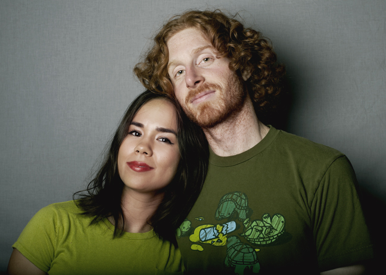

|  |
Kristina is a photographer residing in Los Angeles. She shoots with her partner, Jordan. They believe the world could use more love. Kristina and Jordan met at USC while taking a writing class. They reconnected a few years later over the subject of film. These days, they like kimchi, surrealism, and running. They made this website together. Kristina is also a classical pianist, while Jordan designs video games. |

|
All contents of this website © 2012 Kristina Jacinth. All rights reserved.